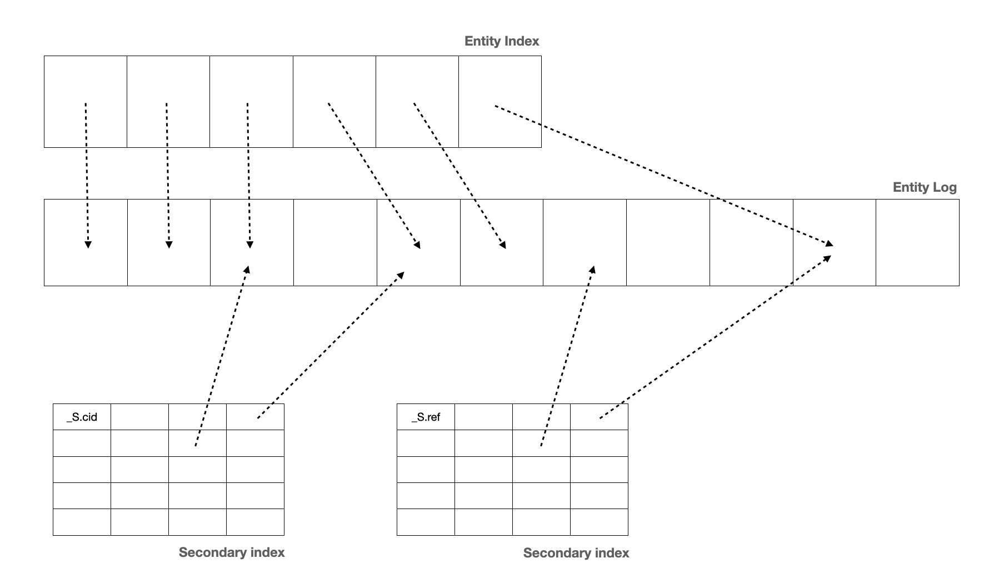

Building blocks#
Streams of entities#
Sesam consumes and produces streams of entities. An entity is very much like a JSON object and consists of a number of key-value pairs along with some special reserved property names. See the entity data model document for more details about entities.
The following is a quick example of the shape of entities that are consumed and exposed by Sesam.
[
{
"_id": "1",
"name": "Bill",
"dob": "01-01-1980"
},
{
"_id": "2",
"name": "Jane",
"dob": "04-10-1992"
}
]
Streams of entities flow through pipes. A pipe has an associated pump that is scheduled to regularly pull data entities from the source, push them through any transforms and send the results to the sink. The most common source is the dataset source which reads entities from a dataset. The most common sink is the dataset sink which writes entities to a dataset. There are also sources and sinks that can read and write data to and from external systems outside of Sesam.
Note
Sesam’s service API is not built to serve a large number of concurrent clients. Sesam is primarily an asynchronous batching and stream processing system. The Service API is not meant to be used by user-facing applications that have low latency and high throughput requirements. For that reason we do not currently give any guarantees in this regard. In practice means that if you have such a requirement you should stream the data out of Sesam and host it in a dedicated publishing systems that can scale its endpoints.
Datasets#
A dataset is the basic means of storage inside Sesam. A dataset is a log of entities supported by primary and secondary indexes. A dataset sink can write entities to the dataset. An entity is appended to the log if it is new (as in, an entity with a never-before-seen _id property) or if it is different from the previous version of the same entity.
A content hash is generated from the content of each entity. This hash value is used to determine if an entity has changed over time. The content hashing is what enables change tracking.
The dataset source exposes the entities from the dataset so that they can be streamed through pipes. As the main data structure is a log the source can read from a specific location in the log. Datasets have full continuation support.
{kind=link}
Systems#
A system is any database or API that could be used as a source of data for Sesam or as the target of entities coming out of Sesam. The system components provide a way to represent the actual systems being connected or integrated.
The system component has a couple of uses. Firstly it can be used to introspect the underlying system and provide back lists of possible ‘source’ or ‘sink’ targets. Often this information can be used on the command line or in the Sesam Management Studio to quickly and efficiently configure how Sesam consumes or delivers data.
The other use of the system is that it allows configuration that may apply to many source definitions, e.g. connection strings, to be located and managed in just one place. Systems also provide services like connection pooling and rate limiting.
You can also run your own extension systems.
Pipes#
A pipe is composed of a source, a chain of transforms, a sink, and a pump. It is an atomic unit that makes sure that data flows from the source to the sink. It is a simple way to talk about the flow of data from a source system to a target system. The pipe is also the only way to specify how entities flow from dataset to dataset.

Sources#
A source exposes a stream of entities. Typically, this stream of entities will be the entities in a dataset, rows of data in a SQL database table, the rows in a CSV file, or JSON data from an API.

Sources have varying support for continuations. They accept an additional parameter called a since token. This token is used to fetch only the entities that have changed since the location stored in the token. This is used to ask for only the entities that have changed since the last time Sesam asked for them. The since token is an opaque string token that may take any form; it is interpreted by the source only. For example, for a SQL source it might be a datestamp, for a log based source it might be an offset.
Sesam provides a number of out of the box source types, such as SQL and LDAP. It is also easy for developers to expose a microservice that can supply data from an external service. The built-in json source is able to consume data from these endpoints. These custom data providers can be written and hosted in any language.
To help with this there are a number of template projects hosted on our GitHub to make this process as easy as possible.
Transforms#
Entities streaming through a pipe can be transformed on their way from the source to the sink. A transform chain takes a stream of entities, transforms them, and creates a new stream of entities. There are several different transform types supported; the primary one being the DTL transform, which uses the Data Transformation Language (DTL) to join and transform data into new shapes.
DTL has a simple syntax and model where the user declares how to construct a new data entity. It has commands such as ‘add’, ‘copy’, and ‘merge’. These may operate on properties, lists of values or complete entities.

In general, DTL is applied to entities in a dataset and the resulting entities are pushed into a sink that writes to a new dataset. The new dataset is then used as a source for sinks that write the data to external systems.
Sinks#
A sink is a component that can consume entities fed to it by a pump. The sink has the responsibility to write these entities to the target, handle transactional boundaries and potentially batching of multiple entities if supported by the target system.
Several types of sinks, such as the SQL sink, are available. Using the JSON push sink enables entities to be pushed to custom microservices or other Sesam service instances.

Pumps#
A scheduler handles the mechanics of pumping data from a source to a sink. It runs periodically or on a cron schedule and reads entities from a source and writes them to a sink.
It’s also capable of rescanning the source from scratch at configurable points in time. If errors occur during reading or writing of entities, it will keep a log of the failed entities and in the case of writes it can retry writing an entity later.
The retry strategy is configurable in several ways and if an end state is reached for a failed entity, it can be written to a dead letter dataset for further processing.
Flows#
Pipes read from sources and writes to sinks. The output of one pipe can be read by many downstream pipes. In this way pipes can be chained together into a directed graph – also called a flow. In some special situations you may also have cycles in this graph. The Sesam Management Studio has features for visualising and inspecting flows.
Environment Variables#
An environment variable is a named value that you can reference in your configuration. Environment variables are used to parameterize your configuration so that you can easily enable/disable or change certain aspects of your configuration. If you have an environment variable called myvariable then you can reference it in configuration like this: "$ENV(myvariable)". Do not use environment variables for sensitive values; use secrets instead. Environment variables are global only.
Secrets#
Secrets are like environment variables except that they are write-only. Once written to the API you cannot read them back out, but you can reference them in your configuration. They should be used for sensitive values like passwords and other credentials. A secret can only be used in certain locations of the configuration. If you have a secret called mysecret then you can reference it in configuration like this: "$SECRET(mysecret)". Secrets can either be global or be local to a system (recommended).
Service Metadata#
The service metadata is a singleton configuration entity that is used for service-wide settings.